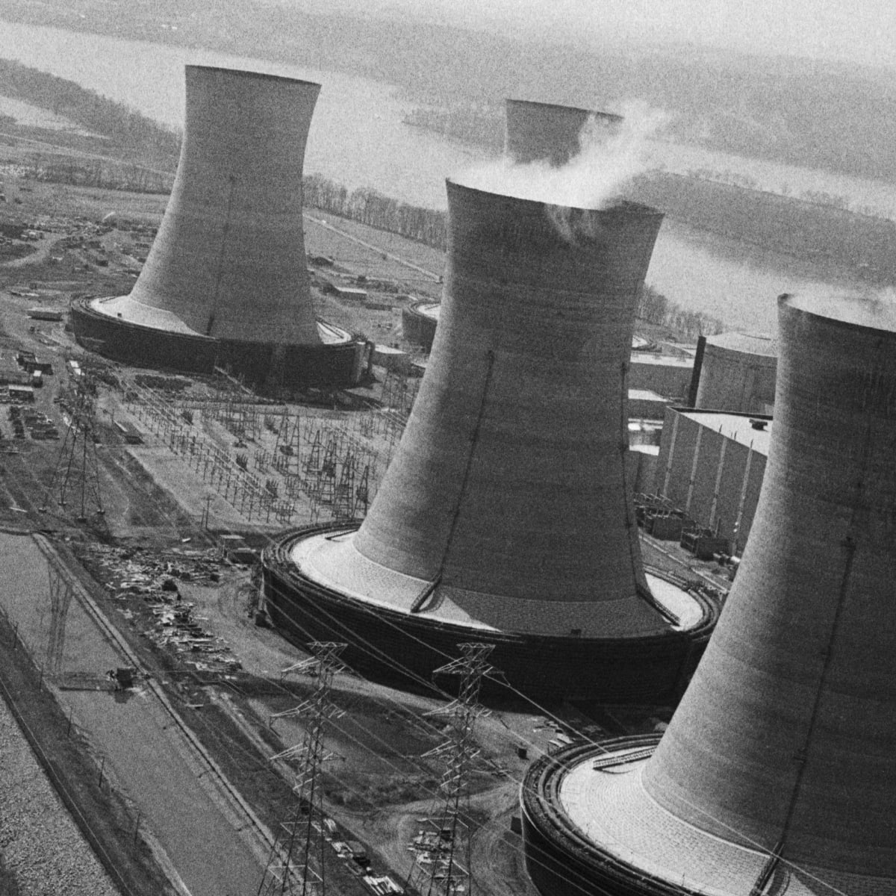
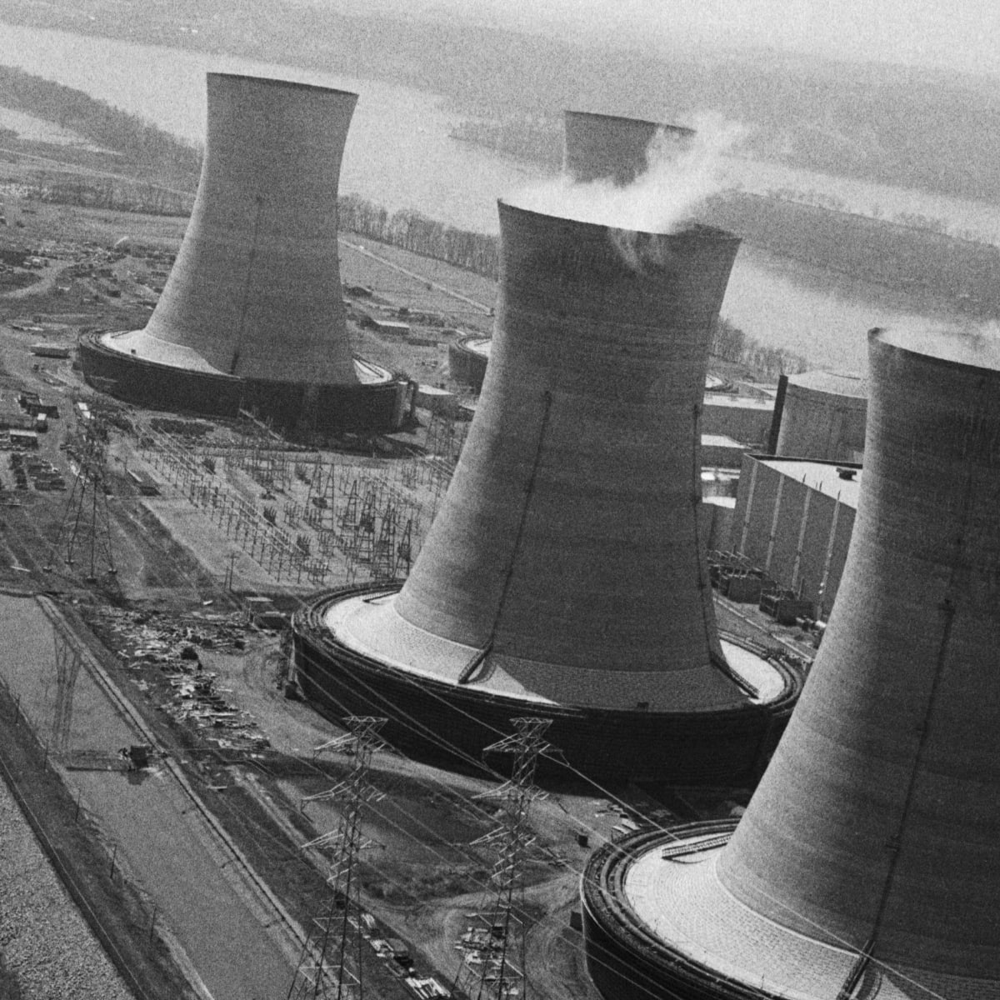

Timeline Of Events
April 25, 1986, 1 a.m. : Chernobyl’s operators begin reducing power at reactor No. 4 in preparation for a safety test, which they have timed to coincide with a routine shutdown for maintenance. The test is supposed to determine whether, in the event of a power failure, the plant’s still-spinning turbines can produce enough electricity to keep coolant pumps running during the brief gap before the emergency generators kick in. Ironically, this safety test brings about the reactor’s destruction.
April 25, 1986, 2 p.m. : Reactor No. 4’s emergency core cooling system is disabled to keep it from interfering with the test. Though this doesn’t cause the accident, it worsens the impact. At around the same time, the test and shutdown are temporarily delayed to accommodate the region’s power needs.
April 25, 1986, 11:10 p.m. : Operators receive permission to continue with the test and shutdown. By now, the less-experienced night shift is on the job, which purportedly never received proper instructions on how to perform the test.
April 26, 1986, 12:28 a.m. : Power plummets to far below the level at which the reactor is considered stable. Operators respond by removing most of the control rods in violation of the plant’s safety guidelines, yet they still have trouble raising the power, in part due to xenon buildup in the core.
April 26, 1986, 1 a.m. : he power stabilizes, albeit at a lower than preferred level, and plant supervisors order the test to proceed. The automatic emergency shutdown system and other safety features are subsequently turned off.
April 26, 1986, 1:23:04 a.m. : The test officially begins, and an unexpected power surge occurs.
April 26, 1986, 1:23:40 a.m. : An operator presses the emergency shutdown button, but the control rods jam as they enter the core.
April 26, 1986, 1:23:58 a.m. : The first explosion, to be quickly followed by at least one more, blows the 1,000-ton roof right off the reactor and shoots a fireball high into the night sky. A blackout roils the plant as the air fills with dust and graphite chunks, and radiation begins spewing out. Walls and equipment collapse, and dozens of fires start up, including one on top of the neighboring reactor. Despite all evidence to the contrary, the nuclear engineer in charge of the test insists that reactor No. 4 is still intact. He later dies of radiation poisoning.
April 26, 1986, 1:28 a.m. : The first firefighters arrive at the scene. They have no knowledge of the radiation and wear no protective clothing.
April 26, 1986, 2:15 a.m. : Local Soviet officials convene an emergency meeting at which they decide to block cars from exiting or entering Pripyat, a nearby city that was built to house Chernobyl’s workers. Police officers assisting with the roadblock likewise have no knowledge of the radiation and wear no protective clothing.
April 26, 1986, 5 a.m. : Officials shut down reactor No. 3, to be followed the next morning by reactor Nos. 1 and 2. They are re-opened months later.
April 26, 1986, 6:35 a.m. : By now, all fires have been extinguished except for a blaze in the reactor core, which will burn for days.
April 27, 1986, 10 a.m. : Helicopters begin dumping sand, clay, boron, lead and dolomite into the burning core in an attempt to slow radioactive emissions.
April 27, 1986: 2 p.m. : After telling residents nothing about the disaster for some 36 hours, Soviet officials finally begin evacuating roughly 115,000 people from Pripyat, as well as nearby towns and villages. Residents are informed it will be temporary and that they should pack only vital documents and belongings, plus some food. Soon after, however, an exclusion zone is set up around Chernobyl that prevents their return.
April 28, 1986 : Swedish air monitors detect a large amount of radiation in the atmosphere, which is traced back to the USSR. Soviet officials admit that there’s been an accident, but they falsely state the situation is under control.
April 29, 1986 : Spy satellite photos provide U.S. officials with their first glimpse of the devastation wrought by the Chernobyl disaster.
May 1, 1986 : Soviet officials refuse to cancel the May Day festivities in Kiev, even as radiation continues to be released unabated.
May 4, 1986 : Liquid nitrogen is pumped underneath the dead reactor in order to cool it. Other aspects of the cleanup, which involves up to 800,000 workers, include bulldozing contaminated villages, shooting contaminated pets and livestock, and burying huge amounts of contaminated topsoil.
May 6, 1986 : Radioactive emissions drop sharply, possibly because the fire in the core has burned itself out. Meanwhile, Soviet officials finally close schools in Kiev and advise residents to stay inside and to not eat leafy vegetables.
May 8, 1986 : Workers finish draining about 20,000 tons of radioactive water from the basement under the core.
May 9, 1986 : Workers begin pouring concrete under the reactor, which is later encased in an enormous concrete and metal structure known as the sarcophagus.li>
May 14, 1986 : Soviet leader Mikhail Gorbachev speaks publicly about the incident for the first time, saying on state TV that "the worst is behind us."
August 25-29, 1986 : The International Atomic Energy Agency hosts a conference at which scientists blame the accident not just on human error and a subpar safety culture, but also on Soviet reactor design flaws.
December 15, 2000 : Unit 3, the last working reactor at Chernobyl, is shut down. Units 1 and 2 had been shut down in 1996 and 1991, respectively.
April 2006 : Gorbachev writes that the Chernobyl disaster, "even more than my launch of perestroika, was perhaps the real cause of the collapse of the Soviet Union."
April 26, 1986, 1:23:04 a.m. :The test officially begins, and an unexpected power surge occurs.
 
